Thanks for purchasing Starbird

Starbird uses a
Twitter list
to follow people's favorites

Add people to the list
to see
Tweets they favorite

Swipe left for newer favorites,
swipe right for older

Sign in to Twitter to get started
Starbird will request access
to your Twitter account
Skip